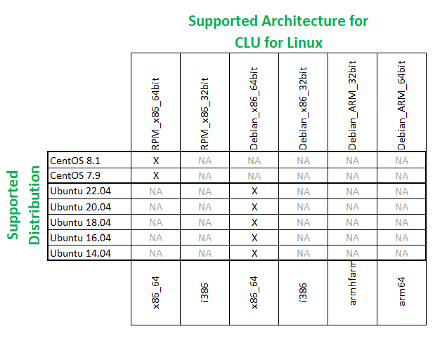

Overview
The CLU (Command Line Utility) is an executable that enables Linux users to manage scanners from a terminal prompt or shell/bash script. The CLU provides features including asset information, firmware update, configuration update, query/set/store of parameter values and query of scanner statistics.
Supported Devices
For the compatible devices list, please visit following page.
https://www.zebra.com/ap/en/support-downloads/software/scanner-software/scanner-sdk-for-linux.htmlSupported Linux Distributions
Command Line Utility (CLU) for Linux latest versions supporting following distributions.
Figure 1: Supported Distributions for Command Line Utility for Linux
Version History
Version 1.0.0-14 - 07/2025
- Bug Fix - Fixed the functionality with GetAttribute, SetAttribute and StoreAttribute commands that do not work as expected when the Attribute ID is not available in the scanner.
- Bug Fix - Fixed the functionality with GetAttribute, SetAttribute, StoreAttribute, Switch* and FirmwareUpdate commands to support multiple scanners and '*’ wildcard
- Bug Fix - Corrected error code returned from 502 to 246, when firmware file is not given during firmware update command execution.
Version 1.0.0-10 - 02/2025
- Added new command “topology” which returns the topology of devices that are connected to the system.
- Added new command “getallattributes” which returns all attributes supported by a given scanner.
- Enhanced switch host mode commands to support temporary host mode switching.
Version 1.0.0-7 - 07/2024
- Enhanced query of asset information (the “assetinfo” command). It now includes the “configuration name” as an output.
- Enhanced CLU to support command execution by scanner ID. When a CLU command is executed, either model name or scanner ID can be used to filter the applicable scanners.
Version 1.0.0-6 - 04/2024
- Added the command “assetinfo” to retrieve asset information. It returns host mode, serial number, firmware version and date of manufacture selected devices.
- Added support for returning error/status codes for the executed CLU commands.
Version 1.0.0-4 - 10/2023
- Bug Fix - Resolved a firmware update failure in IBMHID and IBMTT modes, seen with particular versions of scanner firmware.
Version 1.0.0-2 - 07/2023
- Bug Fix - Addressed memory allocation issue with “reboot” and “getattribute” commands.
Version 1.0.0-0 - 04/2023
-
Command Line Utility (CLU) - Initial release. This utility provides scripting control of Zebra scanner. Supported functionality includes:
- Reboot of a scanner.
-
Parameter Control
- Param Get & Set
- 123Scan config file consumption
- Firmware update